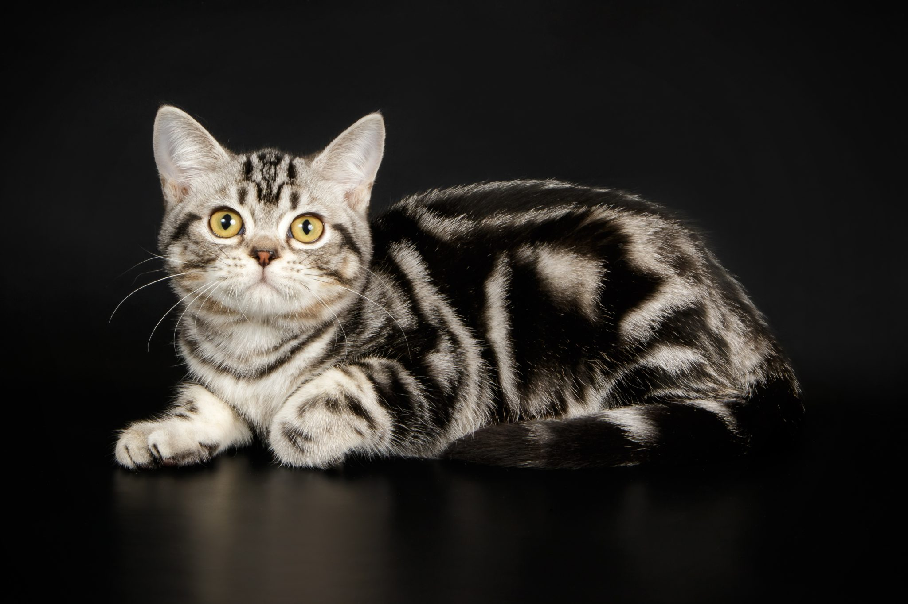

TODO: Transforme o texto "Voltar" abaixo em hiperlink que leva o usuário para a página com o sumário de todos os gatos
Voltar
Chamada também de Pelo Curto Americano, é uma verdadeira raça de trabalho, pois é conhecida pela sua longevidade, saúde, docilidade com crianças e cães, além da sua beleza e temperamento quieto.